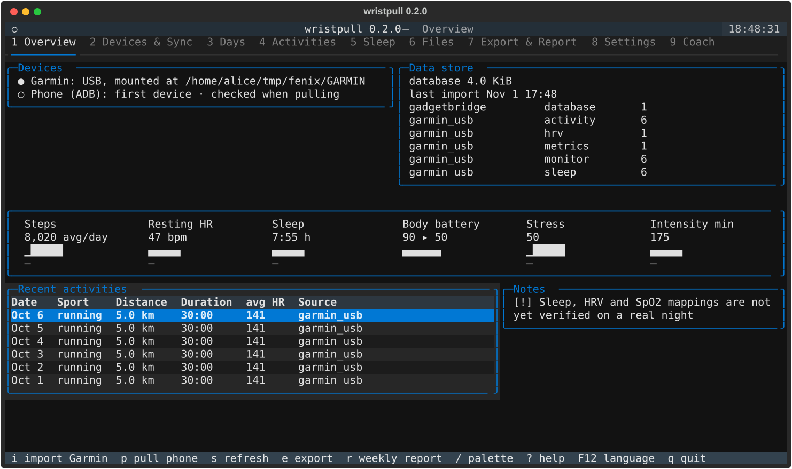

Install it yourself
The primary way is the Docker stack on Linux: one image runs the dashboard and every command — the watch over USB, the band over Bluetooth, the phone over ADB. The host needs neither Python nor uv. A guided setup script does the whole thing and asks only for what's missing.
The script builds the image, writes the environment, installs the udev rule (import on plug-in) and sets up the dashboard — asking before every change.
$ git clone https://github.com/one7two99/wristpull.git ~/dev/wristpull
$ cd ~/dev/wristpull
$ contrib/bin/wristpull-setupWatch on the cable, or the band in Bluetooth range — either alone already works.
$ contrib/bin/wristpull import garmin
$ contrib/bin/wristpull pull strapThe dashboard is already running for your home network; the terminal UI is one command.
$ contrib/bin/wristpull tui # or: open the dashboard on your phone$ contrib/bin/wristpull import garmin-export ~/Downloads/<your-garmin-export>.zip
$ contrib/bin/wristpull coach profile --wizard
$ contrib/bin/wristpull coach daily --dry-run # read the prompt before anything is sentEvery detail — Gadgetbridge setup, the morning routine, backups and moving machines — is documented in the README and docs/.
Which machine fits
| Platform | How | What works |
|---|---|---|
| Linux (laptop, mini-PC, home server) | Docker stack — the reference setup | Everything: watch, band, phone, dashboard, coach, automation |
| macOS / Windows | Native install (Python + uv) | Everything except container automation — Docker there can't reach USB/Bluetooth |
| Your phone | Browser | The dashboard, from your home network |
| Device | Path | Status |
|---|---|---|
| Garmin fēnix 6X Pro | USB cable | verified daily |
| Amazfit Helio Strap | Bluetooth, no phone | verified daily |
| Other Garmin watches | USB (FIT files) | should work — reports welcome |
| Anything Gadgetbridge reads | via the Gadgetbridge app | import works; parsers grow per device |
| Your old Garmin account | account export (zip) | full history import |
For the data people
Twenty documented tables, UTC timestamps plus local dates on every row, raw files archived beside them. Bring polars, pandas, Grafana or a plain shell:
$ sqlite3 ~/Health/wristpull/wristpull.sqlite \
"SELECT local_date, steps, resting_hr, sleep_score
FROM daily_summary
ORDER BY local_date DESC LIMIT 14"Markdown + CSV exports for any date range are one command — sized to paste into an AI chat.
For the careful
Read the source — it's an evening, not a weekend.
